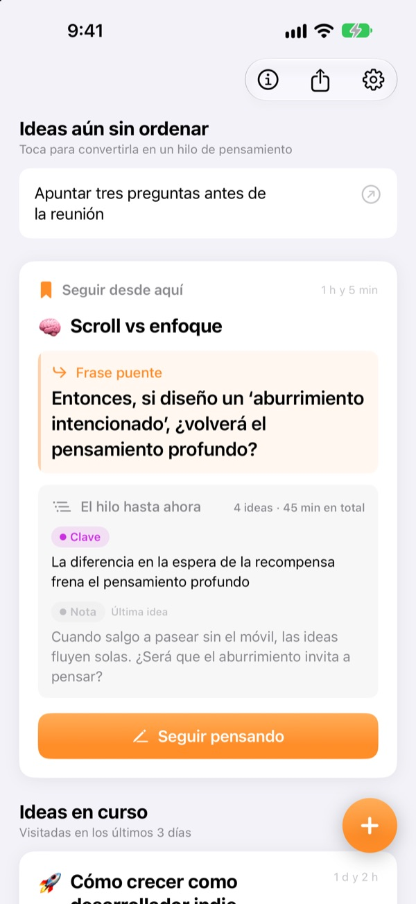
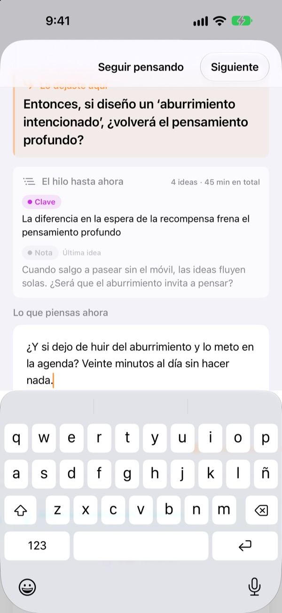
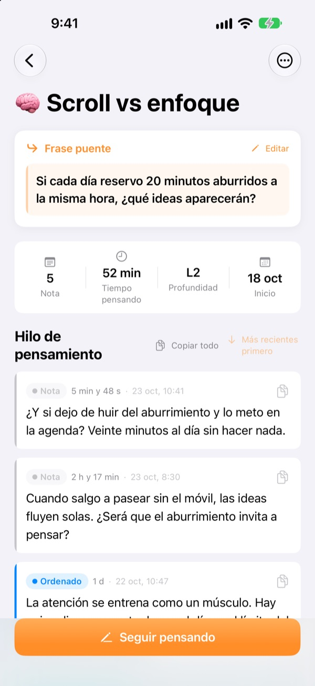
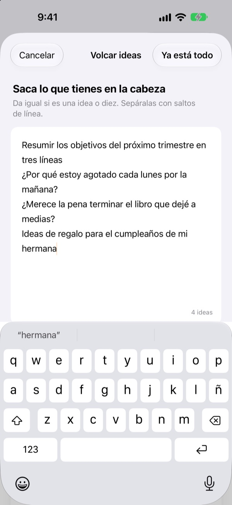

La idea que ayer quedó a medias,
hoy sigue donde estaba
Cuando pares de pensar, deja una línea para continuar. La próxima vez que abras la app, esa línea te espera arriba del todo.
Todas las funciones son gratis. Sin cuenta: todo se queda en tu dispositivo.

Deja tu frase puente
Escribe una idea y deja la frase con la que seguirás la próxima vez. Funciona en el mismo orden que la app.
¿Por dónde iba yo?
Abres una nota de hace unos días y solo quedan un par de conclusiones; la pregunta que ibas a explorar después ha desaparecido. Y toca empezar de cero. ThinkFlow te pide dejar esa siguiente pregunta al parar, para que al volver arranques justo desde ella.
Tu frase puente te espera arriba
Al terminar, deja una sola línea: la pregunta para seguir. Al volver, esa frase, lo esencial hasta ahora y tu última idea están en una misma tarjeta, así que no tienes que reconstruir nada.
También la ves en un widget de la pantalla de inicio, y mientras piensas el tiempo corre en la pantalla de bloqueo y en la Isla Dinámica.

De la nota a lo esencial
Sube cada idea por cuatro niveles: nota, ordenado, clave y resumen. Verás de un vistazo cuánto ha madurado.
Lo que buscaste o consultaste se adjunta como referencia, separado de tus propias ideas.

Primero, vacía la cabeza
Escribe todo lo que te ronda, una línea por idea, y elige la que quieres trabajar ahora: se convierte en un hilo. El resto espera en la pantalla principal hasta que lo toques.
Las ideas que llevas más de tres días sin tocar se reúnen en Ideas por retomar.

Empieza en tres pasos
- 1
Vuelca tus ideas
Una por línea; luego elige la que vale la pena desarrollar.
- 2
Sigue pensando
Añade cada idea nueva por separado para afinarla mejor después.
- 3
Deja la frase y cierra
La próxima vez empiezas desde esa frase.
Nivel de refinado
- Nota
- Idea en bruto
- Ordenado
- Ordenado una vez
- Clave
- Solo lo clave
- Resumen
- Resumen final
Toca la etiqueta de nivel junto a una idea para cambiarla. Lo clave y los resúmenes aparecen primero en la tarjeta al volver.
Tu frase puente te espera arriba
¿Tengo que escribir la frase puente sí o sí?
Si añadiste algo, sí: la pantalla Seguir pensando solo se cierra cuando dejas la siguiente línea. Si no escribiste nada, puedes cerrarla sin más. El truco es parar cuando aún tienes algo que decir, no cuando te atascas.
¿Qué son las Ideas por retomar?
Los hilos que llevas más de tres días sin abrir se agrupan aparte en la pantalla principal, para que una idea olvidada pueda seguir desde su frase puente.
¿Cómo informo de un error o propongo algo?
Usa Enviar comentarios en los ajustes de la app, escribe a la dirección de abajo o abre un issue en github.com/M1zz/ThinkFlow/issues. Todo es bienvenido.
¿De verdad es todo gratis?
Sí. Todas las funciones son gratis, sin anuncios y sin cuenta. «Apoya al desarrollador» en Ajustes es totalmente opcional y no desbloquea nada.
¿Dudas o sugerencias? Escribe a leeo@kakao.com.